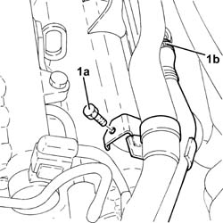
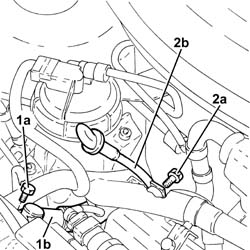
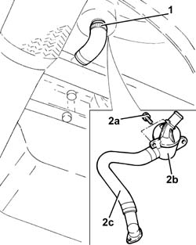
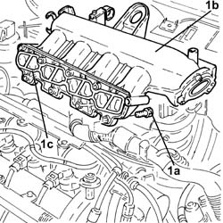
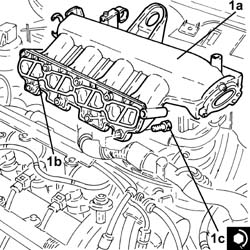

1072B51 Air CHAMBER - R.R. for versions with air conditioning
- Path
- Procedures > 10 ENGINE UNIT > 1072 INLET AND EXHAUST MANIFOLDS > 1072B inlet manifolds > 1072B51 Air CHAMBER - R.R. for versions with air conditioning
- Kind
- repair procedure (removal / refitting; the operation number is the code)
- Applies to
- engines: 1.3 JTD 16v; all production periods
- Interactive page
- https://sloeber94.github.io/elrnDB-fPnd/en/#/2752617
Applies to: engines: 1.3 JTD 16v; all production periods
 Removing
Removing
 Refitting
RefittingRemove the car from the ramps.
5530B52 Battery DRIP TRAY/SUPPORT - R.R.
1080C82 E.G.R. - VALVE HEAT EXCHANGER ASSEMBLY - Connector PIPES - R.R.
1. Undo the bolts (1a), loosen the band and disconnect the oil vapour recovery pipe between the rigid pipe and separator (1b), separator side.

Applies to: engines: 1.3 JTD 16v; all production periods
1. Undo the bolts (1a) and disconnect the connector (1b) of the engine oil vapour recovery pipe from the timing cover.
2. Undo the bolt (2a) and remove the complete engine oil dipstick pipe (2b).

Applies to: engines: 1.3 JTD 16v; all production periods
1. Loosen the band and disconnect the engine oil vapour recovery pipe, separator side.
2. Undo the bolts (2a) and remove the engine oil vapour separator (2b), complete with engine oil vapour recovery pipe (2c).

Applies to: engines: 1.3 JTD 16v; all production periods
Disconnect the electrical connection from the excess pressure sensor.
 | Name | Connector |
|---|---|---|
- | Turbocharging sensor | K82 |
Release the electrical wiring from the bands on the air chamber.
1. Undo the bolts (1a) and remove the air chamber (1b) complete with gasket (1c) and over-pressure sensor.

Applies to: engines: 1.3 JTD 16v; all production periods
Refitting
Removing1. Fit the air chamber (1a) in place, complete with gasket (1b) and excess pressure sensor nd secure it tightening the bolts (1c) to the recommended torque.
 | Fastening | Component | Ø | Value (daNm) |
|---|---|---|---|---|
1c | Bolt | INLET AIR DUCT | M8 | (Cylinder head side) 2.3 ÷ 2.8 |

Applies to: engines: 1.3 JTD 16v; all production periods
Secure the electrical wiring with the bands to the air chamber.
Connect the electrical connection to the excess pressure sensor.
| Name | Connector |
|---|---|---|
- | Turbocharging sensor | K82 |
Fit he oil vapour separator complete with oil vapour recovery pipe in place and secure it using the bolts.
Connect the engine oil recovery pipe, separator side, and tighten the band.
Fit the engine oil level dipstick pipe assembly in place and fix it using the bolt.
Connect the engine oil vapour recovery pipe connector to the timing cover and tighten the bolts.
Connect the oil vapour recovery pipe between the rigid pipe and separator, separator side, then tighten the band and the bolts.
1080C82 E.G.R. - VALVE HEAT EXCHANGER ASSEMBLY - Connector PIPES - R.R.
5530B52 Battery DRIP TRAY/SUPPORT - R.R.
Remove the car from the ramps.